← Index · ← Previous · Next →
Authors: Adriano Amaricci
Type: theory · Category: numerical methods · PDF: https://arxiv.org/pdf/2605.07621v1
Analysis basis: full PDF text, analyzed in chunks
Topic relevance: 🔥 entanglement & information structure 4/5 · Kondo & dissipative impurity 2/5 · scars & prethermalization 2/5
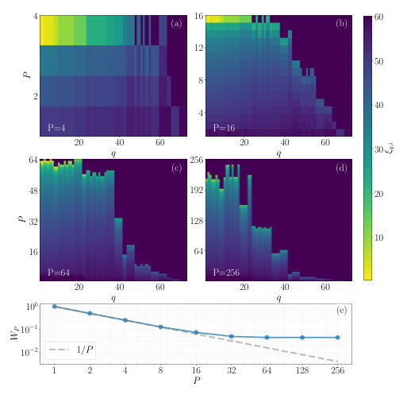
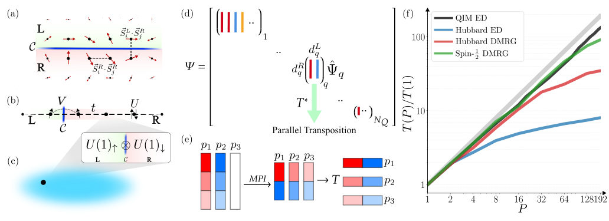
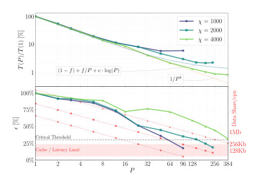
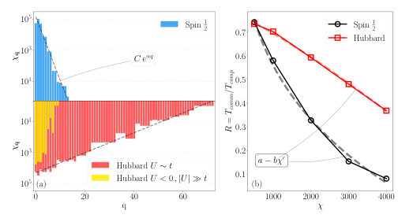
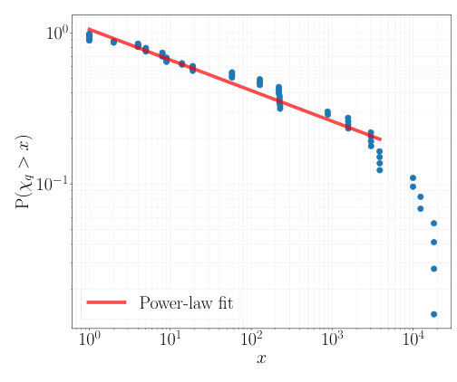
Summary. This paper proposes a new way to perform large-scale quantum many-body simulations by using the system's entanglement structure to organize distributed computing tasks. By mapping the wavefunction to the entanglement spectrum, the authors achieve near-linear scaling and show that the primary limit to efficiency is the fragmentation of symmetry sectors. This establishes entanglement as a fundamental principle for optimizing the computational performance of many-body algorithms.
Why it may be interesting. It provides a method-independent framework for scaling up many-body simulations by leveraging the intrinsic entanglement structure of the quantum state, which is highly relevant for large-scale dynamics and complex many-body simulations.
Main problem. The exponential growth of Hilbert space makes large-scale quantum many-body simulations computationally prohibitive, specifically regarding the bottleneck of Hamiltonian application in distributed computing.
Main result. The authors demonstrate that using the entanglement structure as an organizing principle allows for near-linear scaling in distributed simulations, where scalability is controlled by the fragmentation of the entanglement spectrum.
Method. An entanglement-informed distributed wavefunction approach using parallel T*-transpositions to map the wavefunction onto the entanglement spectrum, applied via ED and DMRG.
Model / system. General K-local Hamiltonians in quantum many-body systems, specifically benchmarked using the 1D Heisenberg model, 1D Hubbard model, and quantum impurity models.
Key observables. Entanglement spectrum, Inverse Participation Ratio (IPR), parallel speed-up, parallel efficiency, and communication-over-computation ratio (R).
Important parameters / regimes. Bond dimension (chi), symmetry group (Q), number of processes (P), and symmetry-sector bond dimension (chi_q).
Assumptions / limitations. Assumes the existence of a symmetry group that commutes with the Hamiltonian and that computational cost scales with the cube of the sector dimensions.
Figures summary. Fig 1 shows entanglement spectrum evolution and IPR; Fig 2 illustrates system bipartitions and the T* transposition scheme; Fig 3 shows parallel speed-up and efficiency scaling; Fig 4 shows symmetry-sector dimension distribution and communication overhead; Fig 5 shows the power-law behavior of the Hubbard model's bond dimension distribution.
Paper structure. The paper introduces the problem of scalability, proposes an entanglement-informed distributed framework, demonstrates its efficiency via benchmarks (Heisenberg, Hubbard, impurity models), provides a statistical analysis of symmetry fragmentation, and derives analytical scaling laws for communication overhead.
We show that the entanglement structure of quantum many-body states defines a natural and optimal distributed representation for their simulation. An arbitrary entanglement cut induces a bipartite decomposition of the wavefunction, mapping its distribution onto that of the entanglement spectrum. In this representation the Hamiltonian application, the core of Krylov-subspace methods, reduces to local contractions and communication-optimal operations. Using benchmarks from different methods and models, we demonstrate near-linear scaling for sufficiently large systems and identify entanglement spectrum fragmentation as a key factor controlling computational cost. This establishes entanglement as an organizing principle and unified, method-independent, route for scaling up quantum many-body simulations.
Authors: Johannes Piotrowski, Constanze Bach, Nicolás Vera Paz, Philipp Schneeweiss, Arno Rauschenbeutel
Type: experiment · Category: other · PDF: https://arxiv.org/pdf/2605.07798v1
Analysis basis: abstract only; PDF text extraction failed or PDF unavailable
Topic relevance: 🔥 quantum measurements 4/5 · 🔥 quantum optics experiment 4/5
Summary. The paper demonstrates that probing atoms trapped near a nanofiber causes heating that reduces the coupling strength between the atoms and the light field. This effect makes near-field probing a transient process unless the atoms are actively cooled. These findings are crucial for designing stable quantum interfaces using nanophotonic waveguides.
Why it may be interesting. This work is highly relevant for quantum optics and open quantum systems as it identifies a fundamental limitation in the stability of light-matter interfaces in nanophotonic structures due to back-action heating.
Main problem. The non-linear dependence of near-field coupling on particle position causes temperature-dependent coupling, making optical probing of trapped particles inherently transient due to heating.
Main result. The researchers experimentally demonstrated that probe light scattering heats trapped atoms, leading to a decrease in coupling strength and atom loss, and showed that coupling can be recovered by re-cooling the atoms.
Method. The study uses cold atoms trapped in a two-color dipole trap surrounding an optical nanofiber, probed with the evanescent field of guided, resonant light.
Model / system. The system consists of cold atoms trapped in a two-color dipole trap around an optical nanofiber, interacting with the evanescent field of guided light.
Key observables. Absorption signal decrease, coupling strength decrease, and atom loss.
Important parameters / regimes. Temperature of the trapped atoms, near-field coupling strength, and scattering-induced heating rate.
Paper structure. The paper introduces the problem of temperature-dependent near-field coupling, describes the experimental setup using atoms and nanofibers, presents the observation of heating-induced signal decay, demonstrates the recovery of coupling via cooling, and concludes with the implications for stable nanophotonic interfacing.
Near-fields around nanophotonic structures and waveguides can be used to optically interface particles ranging from atoms and molecules to microscopic biological and synthetic particles. Due to the strong, non-linear dependence of the near-field coupling strength on the particles' position, a change of the spread of the particles' position will change their mean coupling strength. When the particles are trapped, this position spread depends on their temperature, generally leading to temperature-dependent coupling. Here, we experimentally demonstrate that this effect renders optical probing of trapped particles with near fields an inherently transient process. Specifically, we trap cold atoms in a two-color dipole trap surrounding an optical nanofiber and probe them with the evanescent field of guided, resonant light. The scattering of this probe light heats up the atoms, leading to a decrease of the coupling strength as well as loss of atoms. We observe both effects via a concurrent decrease of the absorption signal. In addition, we demonstrate that the coupling strength can be recovered by cooling the atoms back to their initial temperature. Our findings are relevant for numerous situations where stable coupling of trapped particles to a nanophotonic structure is required.
Authors: Botond Osváth, Gergely Barcza, László Oroszlány
Type: theory · Category: strongly correlated electrons · PDF: https://arxiv.org/pdf/2605.07887v1
Analysis basis: full PDF text, analyzed in chunks
Topic relevance: 🔥 non-equilibrium dynamics 4/5 · entanglement & information structure 2/5 · methods for driven-dissipative 2/5
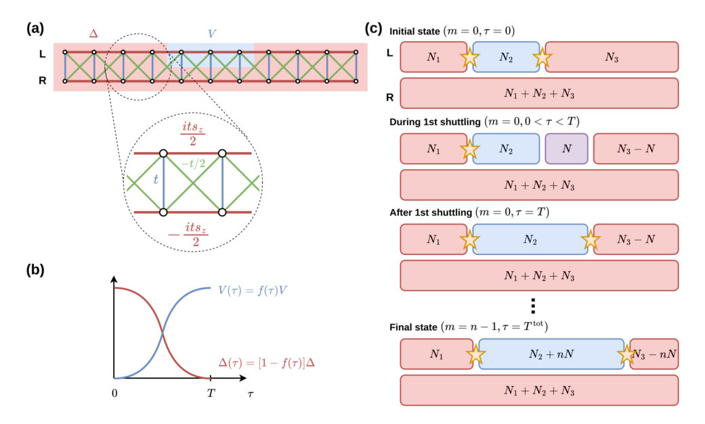
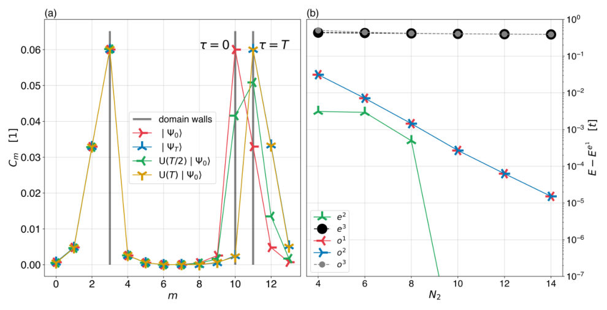
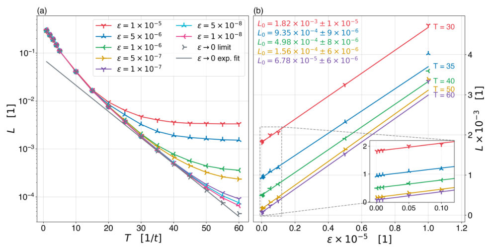
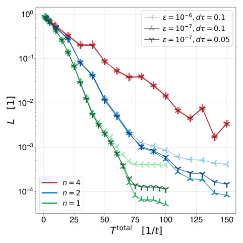
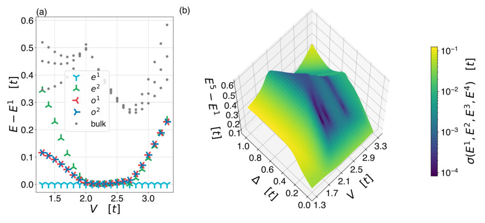
Summary. This paper investigates how to move Z4 parafermion edge states across an electronic ladder without losing quantum information to the bulk. It demonstrates that using a smooth 'piano-key' protocol allows for very fast, high-fidelity transport that is compatible with existing quantum dot experimental timescales.
Why it may be interesting. The paper provides deep insights into the many-body dynamics and the competition between adiabaticity and decoherence during the transport of non-Abelian quasiparticles, which is highly relevant to the control of many-body states in open quantum systems.
Main problem. Investigating the real-time dynamics and stability of shuttling Z4 parafermion edge states in an electronic ladder model, specifically quantifying diabatic leakage and determining the adiabatic speed limit.
Main result. The study finds that Z4 parafermion shuttling can occur on sub-nanosecond timescales with leakage as low as 10^-4, suggesting that the intrinsic physics of the model does not pose a bottleneck for current quantum dot technology.
Method. A combination of Density Matrix Renormalization Group (DMRG) for static properties and the Time-Dependent Variational Principle (TDVP) for simulating many-body dynamics in Matrix Product State form.
Model / system. An interacting electronic ladder model consisting of a central interacting segment flanked by superconducting terminals, mimicking the low-energy physics of helical particles in a 2D topological insulator.
Key observables. Diabatic leakage (L), transition strength (Cm) for localization, fidelity (r), and the energy spectrum (bulk gap and energy splitting).
Important parameters / regimes. Interaction strength (V), superconducting pairing gap (Delta), shuttling time (T), and the 'piano-key' protocol steps (n).
Assumptions / limitations. The study assumes a specific ladder geometry and relies on strong electron-electron interactions to stabilize the parafermions; it also assumes the use of a specific 'piano-key' protocol for parameter modulation.
Figures summary. Fig 1 visualizes the ladder model and the piano-key protocol; Fig 2 shows edge state localization and the stability of the bulk gap; Fig 3 illustrates diabatic leakage decay and multi-site transport; Fig 4 shows multi-site shuttling results; Fig 5 displays the excitation spectrum and the dependence of energy states on V and Delta.
Paper structure. The paper introduces the parafermion platform, describes the electronic ladder model and the piano-key shuttling protocol, presents numerical validation of the model and method, analyzes the dynamics of single-site and multi-site transport, and concludes with an estimation of operational time scales for fault-tolerant computing.
Parafermions with non-Abelian statistics have been proposed as a promising platform for quantum computation, potentially enabling a broader set of topologically protected gates than Majorana fermions. The experimental and theoretical exploration of these exotic quasiparticles remains challenging, as their stability is linked to strong electron-electron interactions. A key step toward practical applications is the controlled shuttling of parafermionic modes, which is required for implementing geometric braiding operations. In the present work, we investigate the real-time dynamics of the elementary shuttling process by applying a combination of the density matrix renormalization group and the time-dependent variational principle approaches. We analyze the transport of $\mathbb{Z}_4$ parafermion edge states and assess the corresponding adiabatic speed limit under experimentally relevant conditions.
Authors: Marcel A. Pinto, Giovanni Luca Sferrazza, Silvia Casulleras, Alejandro Gonzalez-Tudela, Daniele De Bernardis, Francesco Ciccarello
Type: theory · Category: quantum information and computing · PDF: https://arxiv.org/pdf/2605.06771v1
Analysis basis: full PDF text, analyzed in chunks
Topic relevance: 🔥 correlated / nonlocal dissipation 4/5 · interference shaping light 3/5
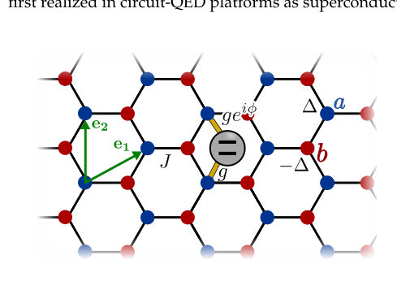
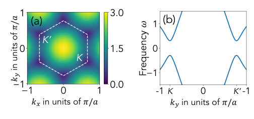
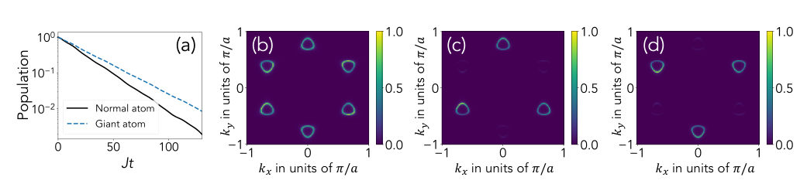
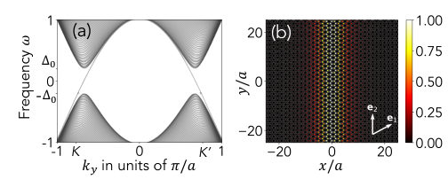
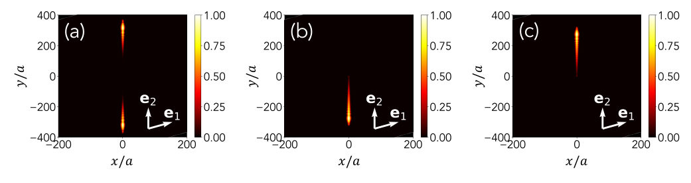
Summary. The paper shows that a giant atom can be used to selectively address photonic valleys in a honeycomb lattice by tailoring its non-local coupling phases. This allows for the generation of valley-polarized photons and unidirectional chiral emission along domain walls. This approach offers a way to implement robust quantum optical components without breaking time-reversal symmetry.
Why it may be interesting. It provides a novel mechanism for controlling light-matter interaction and achieving chiral quantum optics in platforms like circuit QED without requiring magnetic fields or non-reciprocal materials.
Main problem. How to achieve selective coupling to photonic valleys and unidirectional (chiral) single-photon emission without breaking time-reassurence symmetry in the electromagnetic medium.
Main result. Demonstrated that a 'giant atom' (an emitter with multiple non-local coupling points) can be engineered to emit selectively into a single valley and achieve chiral emission along a domain wall by tuning the coupling phases.
Method. The authors use a tight-binding approach, the rotating-wave approximation, and a massive Dirac Hamiltonian to model the lattice, combined with numerical simulations of spontaneous emission dynamics.
Model / system. A two-level quantum emitter (giant atom) non-locally coupled to an engineered 2D honeycomb lattice of resonators with broken inversion symmetry (sublattice detuning).
Key observables. Excited-state population, momentum-space photon density, Berry curvature, Chern number, and decay rates.
Important parameters / regimes. Sublattice detuning (delta), coupling phase (phi), coupling strength (g), and hopping rate (J).
Assumptions / limitations. The model assumes a weak-coupling regime, a low-frequency/low-energy approximation near the Dirac points, and a slowly varying detuning gradient at the domain wall.
Figures summary. Figure 1 shows the giant atom setup; Figure 2 displays the lattice band structure and Brillouin zone; Figure 4 illustrates edge mode dispersion and real-space density; Figure 5 compares spontaneous emission between normal and giant atoms.
Paper structure. The paper introduces the giant atom concept, develops the theoretical framework for valley-selective coupling in the bulk, extends the analysis to chiral emission at a domain wall, and validates results with numerical simulations.
Valleytronics and valley photonics exploit the valley degree of freedom to encode and manipulate information. Here we show that photonic valleys can be selectively addressed in quantum optics using a simple two-level emitter, provided it is coupled nonlocally to the field, thereby realizing a so-called giant atom. Specifically, we consider a qubit coupled at multiple points to an engineered honeycomb lattice of resonators with detuned sublattice frequencies. By tailoring the geometry of the coupling points, the giant atom can be made to emit selectively into a single valley. The emitted photons thereby acquire a well-defined valley character and inherit the associated Berry curvature. By placing the qubit near a domain wall between regions of opposite sublattice detuning, whose interface supports valley-polarized edge modes, emission becomes chiral along the domain wall. This provides a promising route toward implementation of single-photon disorder-robust chiral emission without breaking time-reversal symmetry of the electromagnetic medium in platforms such as circuit QED.
Authors: James Brown, Jason Iaconis, Yuri Alexeev, Linta Joseph, Spencer Churchill, Kenny Heitritter, William Aguilar-Calvo, Martin Roetteler, Martin Suchara
Type: both · Category: quantum information and computing · PDF: https://arxiv.org/pdf/2605.06792v1
Analysis basis: full PDF text, analyzed in chunks
Topic relevance: 🔥 QC/QI experiment 4/5 · quantum measurements 3/5
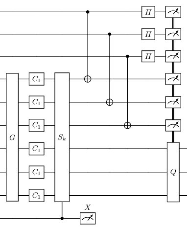
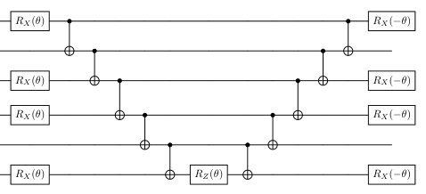
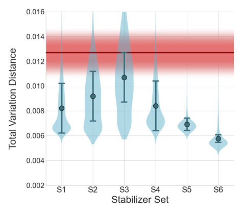
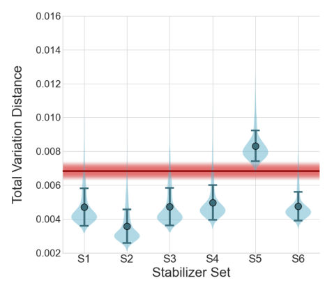
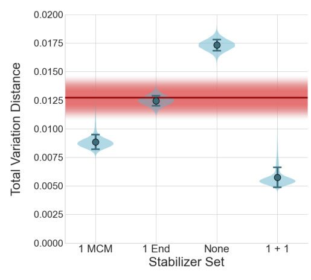
Summary. The paper presents a noise-reduction framework for quantum Hamiltonian simulations that uses mid-circuit measurements to verify Clifford operations. By detecting errors during the circuit rather than at the end, the method significantly reduces logical error rates on trapped-ion hardware. Additionally, it demonstrates that machine learning can effectively optimize the selection of verification operators.
Why it may be interesting. This work is highly relevant for researchers in many-body dynamics and quantum simulation as it provides a practical, low-overhead path to improving the fidelity of Hamiltonian evolution without requiring full-scale quantum error correction.
Main problem. Error accumulation in deep Trotter circuits limits the accuracy of fermionic Hamiltonian simulations on NISQ-era hardware, specifically through the propagation of local faults into high-weight correlated errors.
Main result. The implementation of Clifford Noise Reduction (CliNR) with mid-circuit measurements achieves up to a 54% reduction in logical error rates, with ML-guided stabilizer selection significantly outperforming random selection.
Method. The authors combine Generalized Superfast Encoding (GSE) with a CliNR framework that uses ancilla-assisted stabilizer verification and mid-circuit measurements to verify resource states before teleporting operations.
Model / system. The experiment uses a Barium-based trapped-ion development system (similar to IonQ Tempo) capable of mid-circuit measurements and near-all-to-all interactions, benchmarked against a calibrated device-level Pauli noise model.
Key observables. Total Variation Distance (TVD) between measured and ideal distributions, incorrect-state probability (P_fail), and logical error rates.
Important parameters / regimes. Six-qubit encoded Clifford Trotter step, [[6,3,2]] GSE encoding, and mid-circuit vs. end-of-circuit measurement schedules.
Assumptions / limitations. The study focuses on encoded simulation rather than universal fault tolerance, and the ML model was trained on a simplified symmetric depolarizing noise model.
Figures summary. Fig 1 shows the CliNR circuit structure; Fig 2 shows the physical Trotter baseline; Fig 3 shows hardware error rates (TVD) for various stabilizer pairs; Fig 4 compares readout schedules (MCM vs ECM); Fig 5 shows noisy simulations; Fig 8 shows ML-guided selection performance.
Paper structure. The paper introduces the problem of error accumulation, describes the GSE encoding and CliNR protocol, details the hardware implementation and stabilizer verification, presents hardware and simulation results comparing different measurement schedules, and concludes with an ML-based optimization strategy for stabilizer selection.
Quantum simulation of fermionic Hamiltonians is a leading application of quantum computing, but accurate execution on present-day hardware is limited by error accumulation in deep Trotter circuits. We present a device-matched noise-reduction framework for encoded Hamiltonian simulation that combines symplectic-transvection-based Trotter synthesis in the Generalized Superfast Encoding (GSE) with Clifford Noise Reduction (CliNR) and Shor-style stabilizer verification enabled by mid-circuit measurement. We implement this approach for a six-qubit encoded Clifford Trotter step on a Barium development system similar to the forthcoming IonQ Tempo line and benchmark it against direct execution using both hardware experiments and a calibrated device-level noise model. The encoded CliNR execution achieves up to 54% lower logical error rate. Crucially, this advantage disappears when stabilizer readout is deferred to the end of the circuit, showing that timely mid-circuit fault detection, rather than verification overhead alone, drives the improvement. As a proof of concept, we further show that machine-learning-guided stabilizer selection can identify verification operators that outperform random choices. These results demonstrate that encoding-native verification combined with dynamic-circuit primitives can materially improve application-motivated quantum simulation without the full overhead of quantum error correction.
Authors: Gabriel Rouxinol, Yacine Haddad, Cenk Tüysüz, Sofia Vallecorsa, Michele Grossi
Type: both · Category: quantum information and computing · PDF: https://arxiv.org/pdf/2605.06789v1
Analysis basis: full PDF text, analyzed in chunks
Topic relevance: 🔥 QC/QI experiment 4/5 · entanglement & information structure 3/5
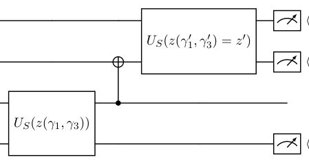
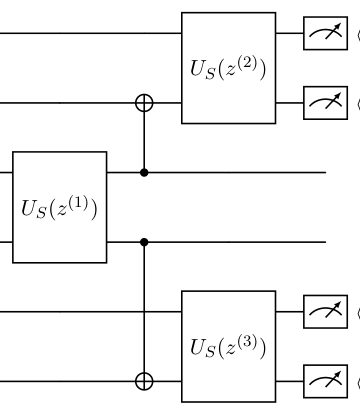
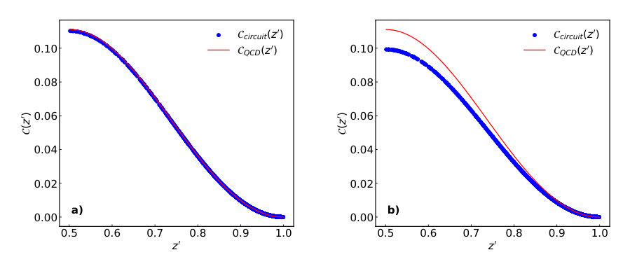
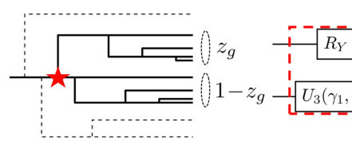
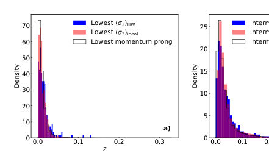
Summary. This paper introduces a physics-inspired quantum algorithm designed to simulate the entanglement and momentum dynamics of QCD parton showers. By creating a modular quantum circuit primitive, the authors demonstrate that quantum hardware can accurately replicate complex gluon-splitting processes observed in LHC experimental data. This provides a foundational framework for future quantum-native event generators in high-energy physics.
Why it may be interesting. not directly relevant
Main problem. Developing a quantum-native, modular algorithm for QCD parton shower generation that captures quantum correlations and entanglement discarded by classical Monte Carlo generators.
Main result. The authors designed a two-qubit circuit primitive that successfully reproduces QCD entanglement (concurrence) and momentum-sharing distributions, with validation on real IBM quantum hardware against LHC experimental data.
Method. The method uses an R-matrix formalism to derive a spin density matrix, constructs a modular quantum circuit using RY and U3 gates, and scales the primitive using CNOT gates to simulate multi-prong splitting structures.
Model / system. The physical system is the QCD gluon-to-gluon (g -> gg) splitting process, modeled as a two-qubit system where helicity states are mapped to qubit states and momentum fractions are encoded via Pauli matrix expectation values.
Key observables. Helicity entanglement (concurrence), momentum-sharing fractions (z and 1-z), and multi-prong momentum-fraction distributions.
Important parameters / regimes. Circuit rotation angles (gamma_1, gamma_2, gamma_3), momentum fraction (z), and the strong coupling constant (alpha_s).
Assumptions / limitations. The current model is limited to perturbative QCD (gluon splitting), does not yet include Sudakov factors or complex color/hadronization dynamics, and requires post-processing to compensate for hardware noise.
Figures summary. Figures illustrate the Feynman diagrams for splitting, the construction of the two-qubit and multi-prong circuits, and comparative plots showing agreement between hardware, ideal simulation, and experimental LHC jet data.
Paper structure. The paper introduces the computational bottleneck of classical event generation, derives the analytical QCD entanglement for gluon splitting, presents the quantum circuit construction and parameter mapping, demonstrates scaling to multi-prong structures, and validates the results using both ideal simulations and real IBM quantum hardware against experimental datasets.
We introduce a modular quantum circuit primitive to model entanglement dynamics in QCD parton splitting and use it as a composable building block for data-driven, physics-consistent event generation. For the pure-gluon channel, we derive an analytic expression for the helicity entanglement generated at the splitting vertex, quantified via the concurrence, and construct a two-qubit circuit whose measurement outcomes encode the momentum shared between outgoing gluons while reproducing the QCD-predicted entanglement structure. Calibrating the circuit parameters to LHC jet substructure data maps, reconstructed momentum-sharing fractions are directly related to circuit rotation angles. Composing multiple splitting primitives yields multi-prong momentum-fraction distributions; we validate the three- and four-prong cases against experimental data and find good agreement. For the three-prong configuration, we execute the circuit on superconducting quantum hardware and obtain results consistent with simulation after standard quality cuts, enabled by the low qubit count and shallow circuit depth. This work provides a concrete framework for quantum-native parton-shower modules that encode quantum correlations at the level of splitting dynamics, and offers physics-informed ansätze for future quantum algorithms for QCD.
Authors: Pranjal Praneel, Thomas G Kiely, Andre G Petukhov, Erich J Mueller
Type: theory · Category: quantum information and computing · PDF: https://arxiv.org/pdf/2605.07906v1
Analysis basis: abstract only; PDF text extraction failed or PDF unavailable
Topic relevance: 🔥 analog quantum simulation 4/5
Summary. This paper investigates the checkerboard Bose Hubbard model using transmon arrays. It shows that introducing a sublattice bias allows for better control and easier experimental access to the commensurate superfluid phase. The study provides a framework for characterizing different quantum phases in these superconducting architectures.
Why it may be interesting. It demonstrates how superconducting circuits (transmons) can be used to simulate complex many-body physics like the Bose Hubbard model, offering a controllable platform for studying phase transitions and quantum states.
Main problem. Exploring the physics of the checkerboard Bose Hubbard model and determining how a sublattice bias can be used to control and probe quantum phases.
Main result. The authors show that a sublattice bias makes the commensurate superfluid phase experimentally accessible and provides new probes for characterizing superfluid and insulating phases.
Method. Theoretical description and characterization of the checkerboard Bose Hubbard model using transmon arrays as a platform.
Model / system. A checkerboard Bose Hubbard model implemented using transmon arrays, featuring a 2D lattice with an added sublattice bias.
Key observables. Probes for characterizing superfluid and insulating phases.
Important parameters / regimes. Sublattice bias, commensurate superfluid phase, and finite size effects.
Paper structure. The paper describes the physics of the checkerboard Bose Hubbard model, details its implementation via transmon arrays, and characterizes the resulting superfluid and insulating phases while accounting for finite size effects.
Adding a sublattice bias to the two dimensional Bose Hubbard model greatly enriches the available physics, and introduces knobs which can be used to control and interrogate the quantum state. We describe the physics of this checkerboard Bose Hubbard model and how it can be explored using transmon arrays. We show that the sublattice bias brings the commensurate superfluid phase into an experimentally accessible regime, and gives new probes. We characterize the superfluid and insulating phases, with careful attention to finite size effects.
Authors: J. Kombe, J. D. Pritchard
Type: theory · Category: quantum information and computing · PDF: https://arxiv.org/pdf/2605.07952v1
Analysis basis: full PDF text, analyzed in chunks
Topic relevance: 🔥 Rydberg arrays 4/5
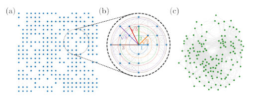
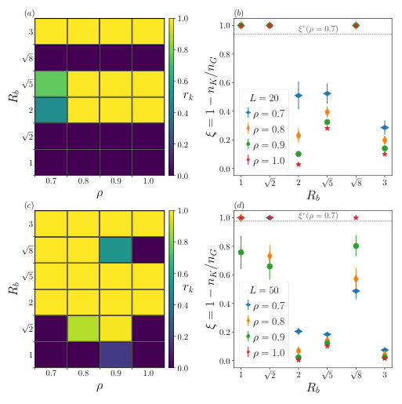
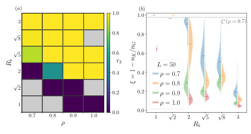
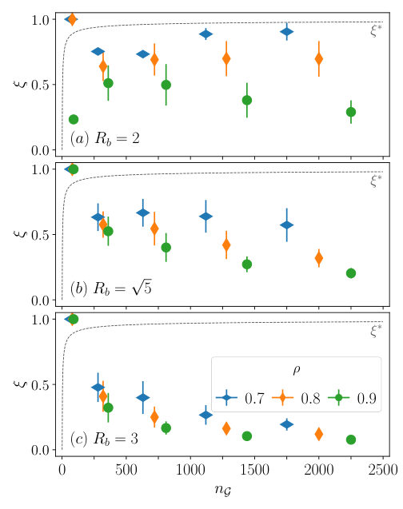
Summary. This paper evaluates how much classical preprocessing can simplify optimization problems like MIS and MWIS before they are run on Rydberg atom arrays. It identifies a transition from easy to hard regimes based on atom density and blockade radius, ultimately suggesting that for many dense graphs, it is better to run the original hardware-native graph rather than attempting to embed a reduced version.
Why it may be interesting. It provides critical insights into the computational complexity of problems natively mapped to Rydberg hardware, helping to identify which problem instances are suitable benchmarks for near-term quantum optimization.
Main problem. Investigating the classical reducibility of Maximum Independent Set (MIS) and Maximum Weighted Independent Set (MWIS) problems on graphs that are natively realizable on Rydberg atom arrays.
Main result. The study finds that while sparse graphs are highly reducible, dense graphs with large blockade radii retain irreducible kernels, and the overhead of embedding these kernels often makes running the original native graph more practical.
Method. The authors use state-of-the-art kernelisation techniques and the LearnAndReduce framework, applying classical reduction rules to random unit-disk graphs (UDG) generated on atom grids.
Model / system. The system is a neutral-atom quantum processor based on Rydberg atom arrays, where connectivity is modeled by unit-disk graphs (UDG) arising from the Rydberg blockade regime.
Key observables. Reduction factor (xi), kernel ratio (rk), and the efficiency threshold (xi*) for embedding.
Important parameters / regimes. Atom density (rho), blockade radius (Rb), grid size (L), and vertex weights (for MWIS).
Assumptions / limitations. The study assumes the connectivity is accurately represented by unit-disk graphs and uses a pragmatic definition of hardness based on reducibility rather than worst-case complexity.
Figures summary. Figure 1 shows the LearnAndReduce algorithmic pipeline and how scaling the blockade radius increases connectivity; Figure 2 and 4 show heatmaps of kernel ratios and the scaling of the reduction factor relative to the embedding threshold.
Paper structure. The paper introduces the problem of graph reducibility in Rydberg arrays, describes the LearnAndReduce methodology, presents numerical results on how density and blockade radius affect reduction, and concludes with a comparison of the trade-offs between kernel embedding and native execution.
We investigate the classical reducibility of random unit-disk graph (UDG) instances of the maximum independent set (MIS) and maximum weighted independent set (MWIS) problems, which can be natively realised in Rydberg atom quantum processors. Using state-of-the-art kernelisation techniques, we systematically probe how far classical preprocessing can simplify such native optimisation problems of varying size and connectivity. While many small or sparse instances can be fully reduced, dense graphs often retain finite irreducible kernels even after extensive reductions. Introducing vertex weights tends to increase reducibility, whereas extending the interaction range in the underlying UDG connectivity suppresses the reduction efficiency. By exploring where classical reductions cease to be effective, we aim to delineate the regime of problem instances that remain computationally demanding - those most relevant for testing and benchmarking near-term quantum optimisation hardware. We find that for the remaining finite kernels, quantum execution would require non-native embeddings with substantial resource overheads, suggesting that directly running native instances may be more practical than embedding a reduced kernel.
Authors: Alfo Borzi, Guofeng Zhang
Type: theory · Category: numerical methods · PDF: https://arxiv.org/pdf/2605.07152v1
Analysis basis: abstract only; PDF text extraction failed or PDF unavailable
Topic relevance: 🔥 methods for driven-dissipative 4/5
Summary. This paper introduces Q-IRKA, a new numerical method for reducing the complexity of large-scale linear quantum systems. Unlike standard methods, it ensures that the simplified models remain physically realistic by preserving the underlying symplectic structure. This allows for efficient and accurate simulations of complex quantum dynamics.
Why it may be interesting. It provides a scalable way to simulate large-scale open quantum systems by reducing their dimensionality without breaking the fundamental physical laws (like commutation relations) that govern them.
Main problem. The challenge of performing H2 model reduction for high-dimensional linear quantum systems while strictly preserving physical realizability (PR) and canonical commutation relations.
Main result. Development of the Quantum IRKA (Q-IRKA) algorithm, which achieves scalable, structure-preserving model reduction that maintains symplecticity and physical realizability to machine precision.
Method. A symplectic Petrov-Galerkin framework using a symplectic variant of the iterative rational Krylov algorithm (Q-IRKA) with a Gram-Schmidt-type procedure for symplectic basis extraction.
Model / system. High-dimensional linear quantum systems, specifically tested on low-channel oscillator-chain systems and a bosonic Kitaev-chain-inspired benchmark.
Key observables. H2 error/norm and preservation of canonical commutation relations.
Important parameters / regimes. Dissipation geometry, channel placement, heterogeneity, and reduced order.
Assumptions / limitations. The systems are assumed to be linear quantum systems that can be described within a symplectic framework.
Paper structure. The paper introduces the problem of physical realizability in model reduction, presents the symplectic Petrov-Galerkin framework and the Q-IRKA algorithm, and validates the method through numerical experiments on oscillator chains and bosonic Kitaev chains.
The $\mathcal{H}_2$ model reduction problem for high-dimensional linear quantum systems is studied under the constraint of physical realizability (PR). This constraint requires preservation of the canonical commutation relations and the quantum input-output structure, and therefore prevents the direct use of standard projection methods. A symplectic Petrov-Galerkin framework is presented, in which reduced-order models automatically satisfy the PR identities by construction. Within this framework, a symplectic variant of the iterative rational Krylov algorithm is developed and referred to as Quantum IRKA (Q-IRKA). At each iteration, an enriched tangential rational Krylov pool is generated from shifted linear solves. A symplectic basis is then extracted by a Gram-Schmidt-type procedure, paired with symplectic conjugates, and normalized so that the reduced trial space satisfies the canonical symplectic constraint. The interpolation points are updated from selected mirror images of the poles of the current reduced-order model, while the reduced-order matrices are obtained exclusively by structure-preserving projection. Numerical experiments on low-channel oscillator-chain systems and on a bosonic Kitaev-chain-inspired benchmark show that Q-IRKA is effective for large-scale linear quantum systems. Symplecticity and PR are preserved to machine precision, and accurate reduced-order models are obtained with moderate computational cost. The results also show that reduction quality depends substantially on dissipation geometry, channel placement, heterogeneity, and reduced order. These findings indicate that scalable $\mathcal{H}_2$ model reduction of linear quantum systems can be achieved while strictly preserving the underlying physical structure.
Authors: Nick Ormrod, Tein van der Lugt, Yìlè Yīng, Jarosław K. Korbicz
Type: theory · Category: quantum information and computing · PDF: https://arxiv.org/pdf/2605.07090v1
Analysis basis: full PDF text, analyzed in chunks
Topic relevance: entanglement & information structure 3/5 · quantum measurements 3/5 · correlated / nonlocal dissipation 2/5 · measurement-induced transitions 2/5 · methods for driven-dissipative 2/5 · non-equilibrium dynamics 2/5
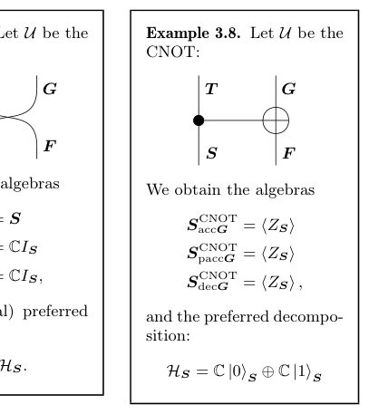
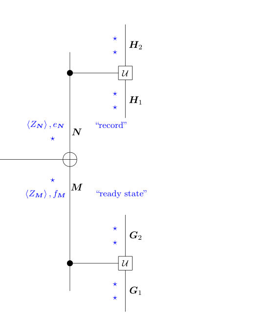
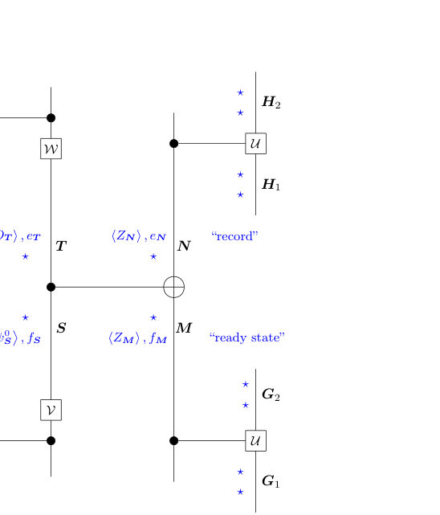
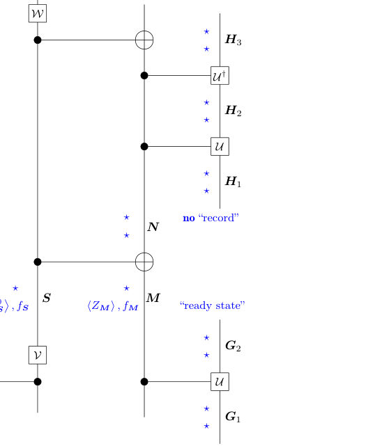
Summary. This paper proposes a new framework for decoherence based on the causal structure of unitary dynamics rather than the evolution of a quantum state. By defining decoherence through the proliferation of information, the authors show that both quantum states and classical outcomes emerge naturally from the dynamics. This approach successfully unifies the theories of environmentally induced decoherence and consistent histories.
Why it may be interesting. It provides a fundamental, state-independent foundation for understanding how classicality emerges from quantum dynamics, which is highly relevant to the study of open quantum systems and the foundations of quantum mechanics.
Main problem. The paper seeks to unify the frameworks of environmentally induced decoherence and consistent histories by providing a state-independent, causal definition of decoherence.
Main result. The authors show that decoherence and its time-reversed dual uniquely single out a privileged consistent history set, demonstrating that quantum states emerge from dual decoherence while outcomes emerge from decoherence.
Method. A 'dynamics-first' approach using quantum causal models, von Neumann algebras, and the Heisenberg picture to define decoherence through the causal influence and proliferation of information.
Model / system. The framework applies to arbitrary unitary circuits and unitary channels (U: S_F to T_G) representing interactions between a system and its environment, including specific examples like the CNOT gate and continuous-time Hamiltonians.
Key observables. Pauli operators (X, Y, Z), accessible and potentially accessible algebras, and the loss of predictability (von Neumann entropy change).
Important parameters / regimes. Regimes of interaction (too little vs. too much influence), discrete-time vs. continuous-time dynamics, and the 'causal balance' required for decoherence.
Assumptions / limitations. The analysis assumes finite-dimensional Hilbert spaces, ideal (non-approximate) decoherence, and the existence of a well-defined unitary dynamics and causal structure.
Figures summary. Figure 1 illustrates the competition between survival and reproduction using Identity, SWAP, and CNOT gates; Figure 5 shows the 'breaking the wires' procedure in a unitary circuit.
Paper structure. The paper begins by defining causal influence and accessibility, moves to the formal definition of decoherence as the intersection of accessible and potentially accessible algebras, extends the theory to continuous-time Hamiltonians, and concludes by proving the equivalence between this causal approach and the preferred consistent history set method.
The consistent histories formalism can be used to describe histories comprised of events across many systems, times, and places, plausibly rich enough to describe our experiences of the classical world; however, many consistent history sets are nonclassical and thus not obviously relevant to our experiences. Meanwhile, the program of environmentally induced decoherence identifies dynamically privileged classical degrees of freedom, but provides no general account of when or how many such degrees of freedom consistently combine to form histories. This work shows that the strengths of these two approaches can be combined by adopting a dynamics-first perspective on decoherence. Inspired by quantum causal models and quantum Darwinism, we define the process of decoherence in terms of the causal influences through unitary dynamics required for the proliferation of information about observables. We characterise decoherence as a property of the unitary dynamics, without presupposing the existence of any quantum state. Instead, we show that the state emerges from dual decoherence, related to decoherence by time-reversal of the unitary dynamics. Indeed, for any set of systems in an arbitrary unitary circuit, decoherence and its dual single out a privileged consistent history set -- and we demonstrate through examples that states emerge from dual decoherence while outcomes emerge from decoherence. Hence the idea that quantum states emerge from the process of decoherence turns out to be the key missing ingredient for unifying environmentally induced decoherence and consistent histories. Taking this idea ontologically seriously leads to a recently proposed causal interpretation of quantum theory or a dynamics-first version of the Everett interpretation. The causal approach also sheds light on the suppression of off-diagonal terms, time asymmetry, and robustness of the pointer basis.
Authors: Francisco Riberi
Type: theory · Category: quantum information and computing · PDF: https://arxiv.org/pdf/2605.08056v1
Analysis basis: abstract only; PDF text extraction failed or PDF unavailable
Topic relevance: Kondo & dissipative impurity 3/5 · methods for driven-dissipative 3/5 · non-equilibrium dynamics 3/5 · correlated / nonlocal dissipation 2/5 · quantum measurements 2/5
Summary. This paper provides an exact solution for a quantum walk with an absorbing boundary. It shows that while weak coupling and strong dissipation both reduce absorption, they do so through different physical mechanisms that exhibit a mathematical duality. The study also characterizes the formation of a localized Wigner droplet in phase-space.
Why it may be interesting. It provides an exact analytical solution for open quantum system dynamics and demonstrates a duality between two physically distinct suppression mechanisms in non-Hermitian systems.
Main problem. The paper investigates the dynamics of a continuous-time quantum walk subject to absorption via a Lindblad boundary sink of arbitrary strength.
Main result. The author derives closed-form expressions for the exact propagator and first-passage statistics, revealing an exact duality between absorption suppression in the weak-coupling and strong-dissipation limits.
Method. The problem is solved from first principles by tracing out the sink, which maps the Lindblad dynamics onto a non-Hermitian tight-binding Hamiltonian with a rank-one imaginary defect.
Model / system. A continuous-time quantum walk on a semi-infinite line featuring a Lindblad boundary sink that introduces non-Hermitian dynamics.
Key observables. Exact propagator, first-passage statistics, and asymptotic absorption probabilities.
Important parameters / regimes. The strength of the Lindblad boundary sink (coupling strength) and the emergence of a localized non-Hermitian mode.
Assumptions / limitations. The system is modeled as a semi-infinite line with a single rank-one imaginary defect.
Figures summary. The evolution is visualized in phase-space, specifically showing a Wigner droplet that is exponentially confined near the edge site due to the non-Hermitian mode.
Paper structure. The paper introduces the Lindblad model, maps it to a non-Hermitian Hamiltonian, derives the propagator and statistics, analyzes the weak and strong coupling limits, and concludes with a phase-space visualization.
We introduce and solve from first principles a continuous-time quantum walk with absorption generated by a Lindblad boundary sink of arbitrary strength. Tracing out the sink maps the problem onto a non-Hermitian tight-binding Hamiltonian with a rank-one imaginary defect on the semi infinite line. We obtain closed-form expressions for the exact propagator and first-passage statistics. Weak coupling limits absorption through inefficient transfer into the sink, whereas for strong dissipation, boundary occupation is stunted by the emergence of a localized non-Hermitian mode. Despite the different physical origin of these suppression mechanisms, we show their respective asymptotic absorption probabilities exhibits an exact duality. The evolution is conveniently visualized in phase-space, where the non-Hermitian mode produces a Wigner droplet exponentially confined near the edge site.
Authors: Anaïs Defossez, Baptiste Bermond, Lucila Peralta Gavensky, Nathan Goldman
Type: theory · Category: quantum gases · PDF: https://arxiv.org/pdf/2605.07948v1
Analysis basis: abstract only; PDF text extraction failed or PDF unavailable
Topic relevance: analog quantum simulation 3/5 · non-equilibrium dynamics 3/5 · correlated / nonlocal dissipation 2/5 · driven-dissipative phase transition 2/5 · methods for driven-dissipative 2/5
Summary. This paper shows that driven-dissipative bosonic lattices can be used to measure the energy-resolved Stredas response, revealing the quantum geometry of Bloch bands. The method uses controlled loss and pumping to filter eigenmode occupations, enabling the study of spectral flow. This approach is particularly useful for understanding how topological features persist or change under strong disorder, such as in topological Anderson insulators.
Why it may be interesting. It provides a novel way to use open quantum system dynamics (driven-dissipative lattices) to probe fundamental topological and geometric properties of bands, specifically linking dissipation to energy-resolved spectroscopy.
Main problem. The paper aims to find a way to access energy-resolved quantum geometry and the Stredas response beyond the quantized Hall conductivity.
Main result. The authors demonstrate that driven-dissipative bosonic lattices can provide direct access to both integrated and energy-resolved Stredas responses, allowing for the reconstruction of the quantum geometric structure of Bloch bands.
Method. The study uses a scheme of controlled pumping with uniform strength and random phases combined with uniform loss to create a Lorentzian filter of eigenmode occupations.
Model / system. The system consists of driven-dissipative bosonic lattices, which are used as a platform to probe anomalous spectral flow and quantum geometry.
Key observables. Integrated and energy-resolved Stredas response, Hall conductivity, and density of states magnetic response.
Important parameters / regimes. Uniform pumping strength, random phases, and uniform loss rates.
Assumptions / limitations. The method assumes a regime where the loss and pumping act as a Lorentzian filter for the eigenmode occupations.
Paper structure. The paper introduces the energy-resolved Stredas marker, proposes a driven-dissipative bosonic lattice scheme for its measurement, and applies it to study topological Anderson insulators under strong disorder.
The Středa formula links the Hall conductivity of an insulator to the magnetic-field response of its particle density, providing a local and universal probe of the topological Chern number. Beyond this quantized response, an energy-resolved Středa marker can be defined from the magnetic response of the density of states, revealing detailed features of the quantum geometry of Bloch bands. We show that driven-dissipative bosonic lattices provide direct access to both the integrated and energy-resolved Středa responses. Our scheme uses controlled pumping with uniform strength and random phases across the lattice, together with uniform loss, to yield a Lorentzian filter of eigenmode occupations. For generic dispersive bands, this enables reconstruction of a coarse-grained energy-resolved Středa response, establishing these platforms as versatile probes of anomalous spectral flow and energy-resolved quantum geometry. As a striking application, we show that this marker elucidates the fate of topological bands under strong disorder, capturing the quantum-geometric structure underlying topological Anderson insulators.
Authors: Jiming Zheng, Zhiyue Lu
Type: theory · Category: statistical mechanics · PDF: https://arxiv.org/pdf/2605.07949v1
Analysis basis: abstract only; PDF text extraction failed or PDF unavailable
Topic relevance: non-equilibrium dynamics 3/5 · correlated / nonlocal dissipation 2/5 · driven-dissipative phase transition 2/5 · methods for driven-dissipative 2/5 · non-equilibrium universality 2/5
Summary. The paper introduces a theory of mutual linearity for nonequilibrium overdamped Langevin systems, showing that local perturbations lead to linearly related stationary densities. This framework applies to both discrete and continuous systems and remains robust even when perturbations have a finite width. The authors demonstrate the utility of this theory by applying it to the F1-ATPase rotary motor model.
Why it may be interesting. This is highly relevant for researchers in open quantum systems and many-body dynamics as it provides a new theoretical framework for predicting and controlling the response of nonequilibrium systems to local perturbations.
Main problem. Understanding how nonequilibrium systems respond to local perturbations and finding a framework to control or design these responses.
Main result. The authors establish 'mutual linearity' in nonequilibrium overdamped Langevin systems, where stationary densities at any two positions are linearly related under local perturbations.
Method. The study uses the framework of overdamped Langevin dynamics and extends the analysis to non-stationary relaxation processes in the Laplace domain.
Model / system. The theory applies to nonequilibrium overdamped Langevin systems, specifically demonstrating its application to the F1-ATPase rotary motor model.
Key observables. Stationary densities, state-current observables, and relaxation processes in the Laplace domain.
Important parameters / regimes. Dynamical parameters subject to local perturbations and the width of the perturbations.
Assumptions / limitations. The system is described by overdamped Langevin dynamics; the theory also considers the robustness under finite-width perturbations.
Paper structure. The paper introduces the concept of mutual linearity, establishes the theory for stationary densities and observables, extends it to non-stationary processes, discusses the 1D response structure origin, proves robustness to finite-width perturbations, and concludes with an application to the F1-ATPase motor.
Understanding how nonequilibrium systems respond to perturbations is a central challenge in physics. In this work, we establish mutual linearity in nonequilibrium overdamped Langevin systems. This theory provides a framework for controlling and designing nonequilibrium responses in continuous systems. When a dynamical parameter is locally perturbed at a single position, the stationary densities at any two positions are linearly related. It further leads to mutual linearity among different stationary state-current observables. We also extend the mutual linearity to non-stationary relaxation processes in the Laplace domain. Our theory reveals that mutual linearity in both discrete and continuous systems originates from the same one-dimensional response structure. We further show that mutual linearity is robust under finite-width perturbations. As an application, we demonstrate the mutual linearity and its finite-width robustness in the F$_1$-ATPase rotary motor model.
Authors: Masaya Nakagawa, Masahito Ueda
Type: theory · Category: statistical mechanics · PDF: https://arxiv.org/pdf/2605.07231v1
Analysis basis: abstract only; PDF text extraction failed or PDF unavailable
Topic relevance: non-equilibrium dynamics 3/5 · correlated / nonlocal dissipation 2/5 · entanglement & information structure 2/5 · methods for driven-dissipative 2/5 · quantum measurements 2/5
Summary. This paper develops a topological theory for classical Markov chains, showing that the topology of the complex spectrum governs both directed transport and non-Markovianity. It identifies a topological origin for feedback-driven effects and demonstrates that these classical non-Markovian processes can be mapped to Markovian quantum dynamics.
Why it may be interesting. It provides a topological framework for understanding non-equilibrium dynamics and non-Markovianity, and establishes a link between classical stochastic topology and quantum master equations, which is highly relevant for open quantum systems.
Main problem. The paper seeks to characterize the topological properties of discrete-time classical stochastic processes and understand how point-gap topology relates to transport and non-Markovianity.
Main result. The authors identify that point-gap topology around a generic reference point determines transport direction, while topology around the origin relates to non-Markovianity; they also show that topologically enforced non-Markovianity can be simulated by a Markovian quantum master equation.
Method. The study uses topological characterization of stochastic matrices (Markov chains) via point-gap topology in the complex spectrum.
Model / system. Discrete-time Markov chains on lattices, specifically applied to models of Maxwell's demon and feedback-controlled processes.
Key observables. Direction of transport and the degree of non-Markovianity.
Important parameters / regimes. The choice of the reference point in the complex spectrum of the stochastic matrix.
Assumptions / limitations. The processes are described by discrete-time Markov chains on lattices.
Paper structure. The paper introduces the topological characterization of stochastic matrices, analyzes the two distinct physical consequences of point-gap topology (transport and non-Markovianity), applies this to Maxwell's demon and feedback control, and concludes with a demonstration of quantum simulation of non-Markovianity.
We present topological characterization of classical stochastic processes described by discrete-time Markov chains on lattices. We point out that point-gap topology of stochastic matrices entails two distinct physical consequences that hinge on the choice of the reference point. The point-gap topology around a generic reference point is related to the direction of transport, and nontrivial topology around the origin of the complex spectrum of a stochastic matrix implies non-Markovianity caused by, e.g., feedback control. On the basis of this characterization, we identify the topological origin of directed transport in a classic experiment of Maxwell's demon [S. Toyabe et al., Nat. Phys. 6, 988 (2010)] and find the topological nature of feedback control beyond thermodynamic interpretation. We demonstrate that a topologically enforced non-Markovian classical stochastic process can be simulated by a Markovian quantum master equation, indicating a topological form of quantum advantage.
Authors: Marcus Bintz, Ahmed Khalifa, Vincent S. Liu, Johannes Hauschild, Michael P. Zaletel, Shubhayu Chatterjee, Norman Y. Yao
Type: theory · Category: numerical methods · PDF: https://arxiv.org/pdf/2605.07685v1
Analysis basis: abstract only; PDF text extraction failed or PDF unavailable
Topic relevance: Rydberg arrays 3/5 · analog quantum simulation 3/5 · exotic spin models in light-matter 3/5
Summary. This paper uses DMRG to investigate the ground states of the dipolar XY spin model on various Archimedean lattices. It identifies several magnetic phases, including Neel order and potential spin liquids, showing how lattice geometry and long-range interactions influence quantum magnetism. The results are highly relevant for predicting the behavior of Rydberg atom and polar molecule arrays.
Why it may be interesting. It provides a systematic classification of quantum phases in dipolar systems that are directly realizable in Rydberg atom and polar molecule arrays, bridging lattice geometry with many-body physics.
Main problem. The study aims to characterize the ground state properties and phase diagrams of the dipolar XY spin model across various Archimedean lattices.
Main result. The authors identify trivial paramagnets and collinear Neel magnetic order on several lattices, find competing phases (coplanar magnetism, stripe density wave, and spin liquid) on the triangular lattice, and suggest a Dirac spin liquid state for the kagome lattice.
Method. Large-scale density matrix renormalization group (DMRG) calculations.
Model / system. The dipolar XY spin model, which features extended antiferromagnetic interactions, implemented on nine of the eleven Archimedean lattices (tilings of the plane by regular polygons).
Key observables. Magnetization, susceptibility, stiffness, and identification of magnetic orders (Neel, coplanar, stripe density wave, and spin liquid).
Important parameters / regimes. Long-range couplings inherent to the dipolar model.
Assumptions / limitations. The study focuses on the ground state properties of the model.
Paper structure. The paper presents numerical results for different Archimedean lattices, compares hydrodynamic parameters to linear spin wave theory, investigates competing phases on the triangular lattice, and discusses the kagome lattice.
We report numerical ground states for the dipolar XY spin model, which describes extended antiferromagnetic interactions in two-dimensional arrays of polar molecules and two-level Rydberg atoms. Carrying out large-scale density matrix renormalization group (DMRG) calculations, we compute ground state properties on nine of the eleven Archimedean lattices--tilings of the plane by regular polygons. Four of these host trivial paramagnets, while another four develop collinear Neel magnetic order, as was found previously for the square lattice. For the ordered states, we calculate the hydrodynamic parameters (magnetization, susceptibility, and stiffness) and compare to linear spin wave theory. We also investigate the triangular lattice, for which we find several competing phases including coplanar magnetism, stripe density wave order, and a possible spin liquid; their relative stability is sensitive to the long-range couplings present in our dipolar model. Finally, the Archimedean classification is completed by the kagome lattice, which we argue in a companion work is likely to be a Dirac spin liquid.
Authors: Seyed Mohsen Moosavi Khansari
Type: theory · Category: quantum information and computing · PDF: https://arxiv.org/pdf/2605.07033v1
Analysis basis: full PDF text, analyzed in chunks
Topic relevance: entanglement & information structure 3/5 · non-equilibrium dynamics 3/5 · methods for driven-dissipative 2/5
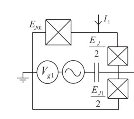
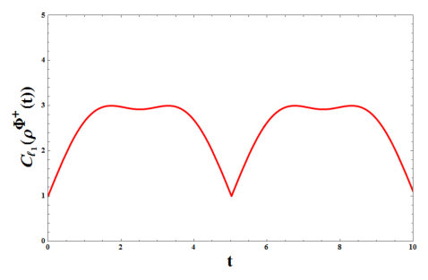
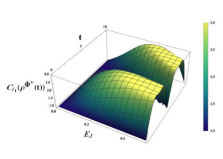
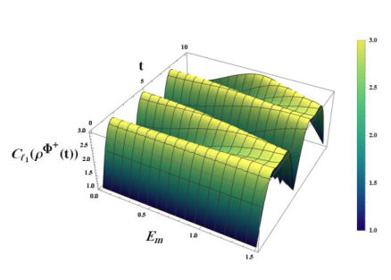
Summary. This paper provides an exact analytical solution for how quantum coherence evolves in a two-qubit superconducting system. It demonstrates that coherence can be precisely controlled and tuned by adjusting Josephson and coupling energies. These results offer a mathematical foundation for optimizing superconducting qubit parameters.
Why it may be interesting. It provides exact analytical tools for predicting coherence dynamics and parameter-driven tuning, which is foundational for designing controlled quantum gates and understanding the transition to open-system dynamics.
Main problem. The study aims to analytically quantify the temporal evolution of the C_l1 norm of coherence for Bell states within a two-qubit superconducting system.
Main result. The researchers found that two Bell states remain invariant with constant coherence, while the other two exhibit non-sinusoidal oscillations driven by two distinct frequency scales related to circuit parameters.
Method. The authors derive a closed-form unitary time-evolution operator via block-diagonalization of the Hamiltonian and propagate Bell-state initial conditions to obtain time-dependent density matrices.
Model / system. A minimal two-qubit superconducting system (TQS) governed by a Hamiltonian featuring zz-type mutual coupling energy (Em) and transverse Josephson tunneling (EJ).
Key observables. The C_l1 norm of coherence.
Important parameters / regimes. Josephson tunneling energy (EJ), mutual coupling energy (Em), and the resulting frequency scales Omega1 and Omega2.
Assumptions / limitations. The analysis assumes purely unitary, closed-system dynamics without dissipation, decoherence, or device-specific effects like transmon anharmonicity.
Figures summary. Figure 1 depicts the TQS system; Figure 2 shows temporal oscillations of coherence; Figures 3 and 4 present 3D surface plots of coherence as a function of EJ, Em, and time.
Paper structure. The paper introduces the TQS model, derives the analytical time-evolution operator and density matrices, analyzes the coherence dynamics of specific Bell states, and concludes with numerical visualizations and future directions.
We present an exact analytic study of unitary coherence dynamics in a minimal two qubit superconducting system. By deriving the full time evolution operator and propagating Bell state initial conditions, we obtain closed form time dependent pure state density matrices and an explicit analytic expression for the $C_{l_1}$ norm of coherence. Two of the Bell states are shown to be invariant under the model dynamics with constant coherence, while the other two exhibit controlled, parameter dependent coherence oscillations. The oscillatory behaviour is governed by two distinct frequency scales that map directly onto the circuit coupling and tunnelling parameters, allowing predictable tuning of amplitude and periodicity. Numerical visualizations clarify operating regimes for transient enhancement or suppression of coherence. These results deliver compact, analytically tractable tools for parameter optimisation and provide a clear foundation for incorporating dissipation and for experimental validation.
Authors: Arjun R, Pratyush Prakash Patra, A. V. Anil Kumar
Type: theory · Category: statistical mechanics · PDF: https://arxiv.org/pdf/2605.07597v1
Analysis basis: abstract only; PDF text extraction failed or PDF unavailable
Topic relevance: driven-dissipative phase transition 3/5 · non-equilibrium dynamics 3/5 · non-equilibrium universality 2/5
Summary. This paper investigates how nonreciprocal interactions drive collective dynamics in a two-species particle system. It demonstrates that spatially modulated nonreciprocity is essential for generating travelling waves and complex dynamical patterns. The results provide a fundamental framework for studying non-equilibrium phase transitions and self-organized motion.
Why it may be interesting. This is highly relevant for many-body dynamics and open quantum systems as it provides a minimal framework for understanding how broken symmetry in interactions leads to self-organized, time-dependent collective motion.
Main problem. Understanding how the spatial structure of nonreciprocal interactions (where action-reaction symmetry is broken) drives the onset of collective motion and dynamical phase transitions.
Main result. The study finds that while uniform nonreciprocity only causes stationary instabilities, spatially modulated nonreciprocity can trigger Hopf bifurcations, leading to the emergence of standing and travelling waves.
Method. The authors use a combination of linear stability analysis, weakly nonlinear arguments, pseudo-spectral simulations, and Langevin particle dynamics.
Model / system. A two-species nonreciprocal McKean-Vlasov equation derived from a system of interacting stochastic particles.
Key observables. Critical diffusion thresholds, Hopf bifurcation types (subcritical and supercritical), and the emergence of travelling and standing wave states.
Important parameters / regimes. Symmetry and spatial modulation of nonreciprocity, coupling to the interaction potential, and diffusion thresholds.
Assumptions / limitations. The framework assumes a continuum mean-field description that is validated by underlying particle-level Langevin dynamics.
Paper structure. The paper introduces the nonreciprocal McKean-Vlasov model, performs linear and nonlinear stability analysis, presents pseudo-spectral and Langevin simulations, and concludes by establishing the framework for non-equilibrium collective order.
Nonreciprocal interactions, in which action-reaction symmetry is broken, provide a powerful route to collective dynamics that cannot be captured by equilibrium free-energy minimisation. Here, we introduce and analyse a two-species nonreciprocal McKean-Vlasov equation derived from an underlying system of interacting stochastic particles. Combining linear stability analysis, weakly nonlinear arguments, pseudo-spectral simulations, and Langevin particle dynamics, we show that the structure of nonreciprocity controls the onset and nature of collective order. For spatially uniform weak nonreciprocity, asymmetry shifts the critical diffusion threshold but produces only stationary instabilities, indicating that uniform imbalance alone is insufficient to generate sustained time-dependent motion. In contrast, spatially modulated nonreciprocity fundamentally enriches the dynamics: depending on its symmetry and coupling to the interaction potential, the homogeneous state can lose stability through Hopf bifurcations, giving rise to standing and travelling wave states. We identify both subcritical and supercritical Hopf transitions, relate the selected patterns to Landau saturation coefficients, and show that travelling waves can emerge even in the weak-nonreciprocity regime without explicit microscopic run-and-chase rules. Direct Langevin simulations confirm that these oscillatory and travelling states persist at the particle level and are not artefacts of the continuum mean-field description. Our results establish nonreciprocal McKean-Vlasov equations as a minimal framework for understanding how spatially structured asymmetric interactions generate self-organized motion, dynamical phase transitions, and nonequilibrium collective order.
Authors: Francesco Anna Mele
Type: theory · Category: quantum information and computing · PDF: https://arxiv.org/pdf/2605.08082v1
Analysis basis: abstract only; PDF text extraction failed or PDF unavailable
Topic relevance: quantum measurements 3/5 · Keldysh / 2PI / non-Gaussian methods 2/5 · entanglement & information structure 2/5
Summary. This paper reviews recent theoretical advances in quantum learning theory for continuous-variable systems like bosonic and optical modes. It explores the complexities of learning Gaussian and non-Gaussian states and identifies key open problems in the field. The work is significant for understanding the efficiency of quantum state tomography in infinite-dimensional Hilbert spaces.
Why it may be interesting. It provides a critical overview of the theoretical foundations for extracting information from bosonic systems, which is essential for the development of quantum-optical technologies and quantum information processing.
Main problem. The paper reviews the development of quantum learning theory specifically for continuous-variable (CV) systems, focusing on sample complexity and state tomography.
Main result. The review summarizes recent progress in determining the minimum number of copies needed to learn Gaussian and non-Gaussian states, and provides bounds on trace distance between CV states.
Method. A literature review and theoretical synthesis of recent advances in CV quantum learning theory and tomography.
Model / system. Continuous-variable (CV) systems, which include bosonic and quantum-optical systems.
Key observables. Trace distance, covariance matrices, and non-Gaussianity.
Important parameters / regimes. Sample complexity (number of copies), energy constraints, and Gaussianity/non-Gaussianity levels.
Paper structure. The paper provides a concise review of CV quantum learning theory, addressing sample complexity for Gaussian and non-Gaussian states, testing for Gaussianity, learning Gaussian processes, and reviewing trace distance bounds.
This paper reviews recent advances in quantum learning theory for continuous-variable (CV) systems. Quantum learning theory investigates how to extract classical information from quantum systems as efficiently as possible. CV systems are ubiquitous in nature and in quantum technologies, as they describe bosonic and quantum-optical systems. While quantum learning theory for finite-dimensional systems has been extensively studied, the corresponding theory for CV systems has only recently begun to develop; here we provide a concise review. We focus on the following questions: what is the minimum number of copies (the sample complexity) required to learn a non-Gaussian state, possibly under energy constraints? What is the sample complexity for learning Gaussian states? How does the performance of CV state learning depend on non-Gaussianity? How can one test whether a state is Gaussian or far from the set of Gaussian states? And how can Gaussian processes be learned efficiently? Central to these topics, we also review several bounds on the trace distance between CV states in terms of their covariance matrices, which may be of independent interest. Overall, this work summarises selected developments in tomography of CV systems and highlights a selection of open problems.
Authors: G. Sharvan Prakash, R. Muthuganesan
Type: theory · Category: quantum information and computing · PDF: https://arxiv.org/pdf/2605.07449v1
Analysis basis: abstract only; PDF text extraction failed or PDF unavailable
Topic relevance: entanglement & information structure 3/5 · non-equilibrium dynamics 2/5 · spintronics-quantum-optics interface 2/5
Summary. This paper proposes a hybrid qubit-qutrit quantum battery using a mixed spin-1/2 and spin-1 system. It shows that quantum entanglement and coherence are essential for improving energy-storage efficiency and suggests that such a battery could be implemented using nickel-radical molecular complexes even at room temperature.
Why it may be interesting. It explores the intersection of quantum thermodynamics and quantum information, specifically how nonclassical correlations like entanglement and coherence can be leveraged to optimize energy storage in a hybrid spin system.
Main problem. The study investigates the performance and nonclassical properties of a hybrid qubit-qutrit quantum battery.
Main result. The researchers demonstrate that quantum coherence and entanglement significantly enhance energy-storage efficiency, with ergotropy and power exhibiting oscillatory dynamics.
Method. The authors use the l1-norm of coherence and negativity to characterize nonclassicality and evaluate battery performance using ergotropy, power, and capacity.
Model / system. A mixed spin-1/2 and spin-1 system interacting via an anisotropic Heisenberg exchange coupling in a homogeneous magnetic field, specifically linked to a nickel-radical molecular complex.
Key observables. l1-norm of coherence, negativity, ergotropy, power, and capacity
Important parameters / regimes. anisotropic Heisenberg exchange coupling, magnetic field strength, and system parameters
Assumptions / limitations. The model assumes the system can be realized in a solid-state molecular platform and that quantum correlations persist at room temperature.
Paper structure. The paper proposes a hybrid model, characterizes nonclassicality via coherence and entanglement, evaluates battery performance metrics, investigates parameter dependence, and connects the model to an experimental molecular complex.
We propose and analyze a hybrid qubit-qutrit quantum battery (QB) based on a mixed spin-1/2 and spin-1 system interacting via an anisotropic Heisenberg exchange coupling in the presence of a homogeneous magnetic field. The nonclassical properties of the system are characterized using the l1-norm of coherence and negativity, which quantify quantum coherence and entanglement, respectively. The performance of the quantum battery is evaluated through key indicators such as ergotropy, power, and capacity. Our results reveal that both ergotropy and power exhibit oscillatory dynamics, while the capacity remains constant over time. We further investigate the influence of system parameters and magnetic field strength on both quantum correlations and battery performance, demonstrating that nonclassicality plays a crucial role in enhancing energy-storage efficiency. Importantly, we establish a connection between the theoretical model and an experimentally realizable nickel-radical molecular complex, showing that quantum coherence, entanglement, and efficient energy storage persist even at room temperature. These findings provide a realistic pathway toward the implementation of hybrid qubit-qutrit quantum batteries in solid-state molecular platforms.
Authors: Gunter M. Schutz, Ali Zahra
Type: theory · Category: statistical mechanics · PDF: https://arxiv.org/pdf/2605.07615v1
Analysis basis: full PDF text, analyzed in chunks
Topic relevance: non-equilibrium dynamics 3/5 · driven-dissipative phase transition 2/5 · non-equilibrium universality 2/5
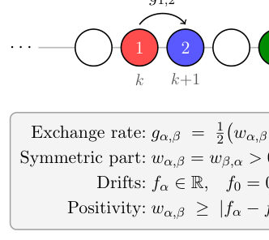
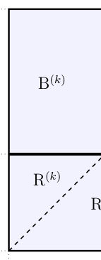
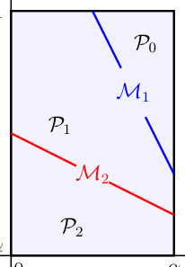
Summary. This paper provides an exact hydrodynamic description of a multi-species exclusion process by finding a set of Riemann invariants that diagonalize the governing conservation laws. It explicitly maps microscopic boundary rates to a macroscopic phase diagram containing 2n+1 distinct phases. This work establishes a multi-component analogue to the well-known Burgers hydrodynamics.
Why it may be interesting. not directly relevant
Main problem. Analyzing the large-scale hydrodynamic behavior and boundary-induced phase transitions in the n-species particle-exchange process (PEP(n)).
Main result. The authors derive a system of n coupled inviscid Burgers equations that admit global Riemann invariants, allowing for explicit solutions to the Riemann problem and the derivation of a stationary phase diagram with 2n+1 phases.
Method. The study uses the Euler scale to derive hydrodynamic conservation laws, employs a rational function approach to identify Riemann invariants, and applies a steady-state selection rule to determine the phase structure in open systems.
Model / system. The n-species particle-exchange process (PEP(n)) is a multi-component exclusion process where particles of n different species exchange positions on a 1D lattice with rates that preserve a product invariant measure.
Key observables. Particle densities, stationary currents, Riemann invariants, characteristic speeds, and phase boundaries.
Important parameters / regimes. Number of species n, drift parameters f_alpha, symmetric exchange rates w_alpha,beta, and microscopic boundary rates.
Assumptions / limitations. The system is restricted to a parameter manifold where the invariant measure is a product measure, and the non-degenerate case assumes all drift parameters f_alpha are pairwise distinct.
Figures summary. Figure 1 illustrates the microscopic exchange rates and constraints; Figure 2 shows the phase diagram for a single wave family in the Riemann variable plane; Figure 3 shows the bulk phase portrait mapping Riemann variables to physical densities.
Paper structure. The paper introduces the PEP(n) model, derives the hydrodynamic limit as a system of Burgers equations, constructs Riemann invariants to solve the Riemann problem, extends the model to open boundaries, and concludes with an explicit derivation of the stationary phase diagram.
The $n$-species particle-exchange process (PEP($n$)) is an exclusion process in which particles of $n$ different species exchange positions on neighbouring sites with rates chosen such that the invariant measure on the discrete torus is a product measure. We address the large-scale hydrodynamic behaviour of this process which yields a system of $n$ coupled inviscid Burgers equations. This system of conservation laws is shown to admit Riemann invariants for arbitrary $n$ from which explicit solutions of the Riemann problem in terms of shock waves and rarefaction fans are obtained. We also introduce the open PEP($n$), in which particles are exchanged with boundary reservoirs. For a distinguished manifold of boundary rates, we prove that the invariant measure is the same product measure as in the periodic system. The hydrodynamic description in terms of Riemann invariants is used to derive the stationary phase diagram explicitly in terms of microscopic boundary rates. In the generic case, the steady state exhibits $2n+1$ phases, with boundary-induced phase transitions analogous to those of the single-species asymmetric simple exclusion process.
← Index · ← Previous · Next →